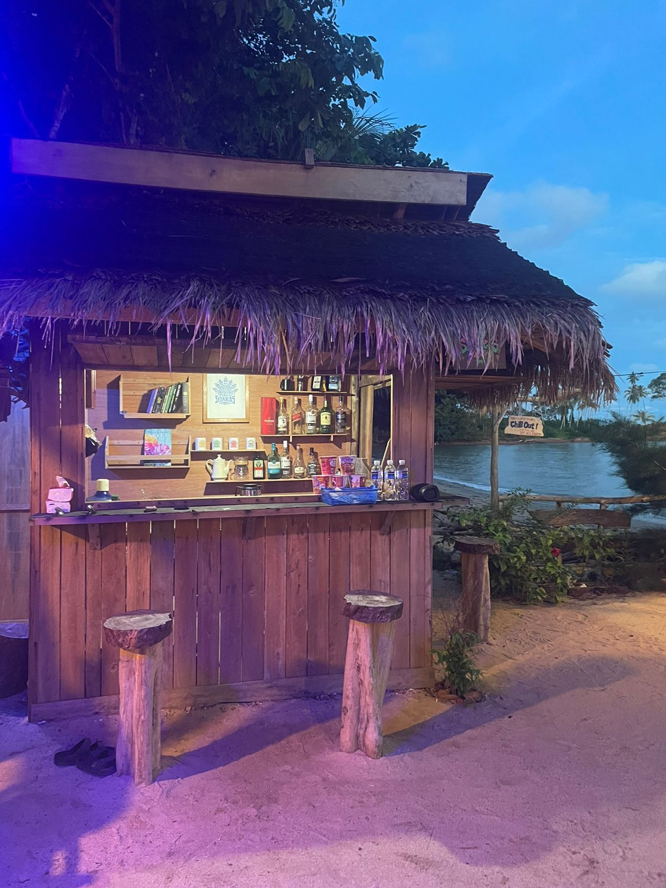

SELARAS BAR
Selain minuman segar, Selaras Bar juga menyediakan fasilitas sederhana untuk menambah kenyamanan Anda. Tersedia colokan listrik untuk mengecas HP dan beberapa buku bacaan ringan yang bisa dinikmati sambil bersantai. Kami juga dengan senang hati menerima sumbangan buku dari siapa pun yang ingin berbagi.
selaras menu
- Kopi & Es Kopi
- Squash Drink
- Minuman Segar & Jus Buah
- Camilan Ringan
“Here, we believe that every sip of coffee is a little prayer for a brighter day.”
